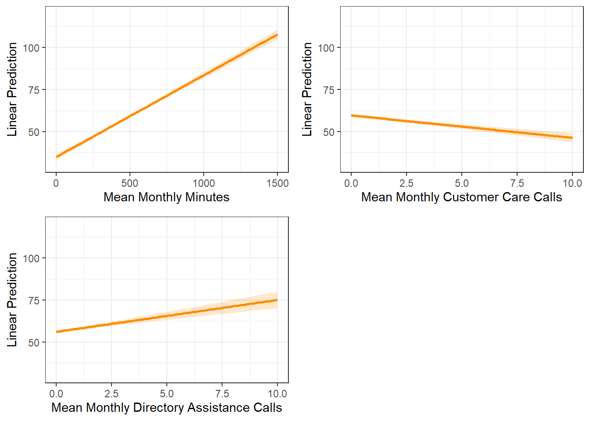
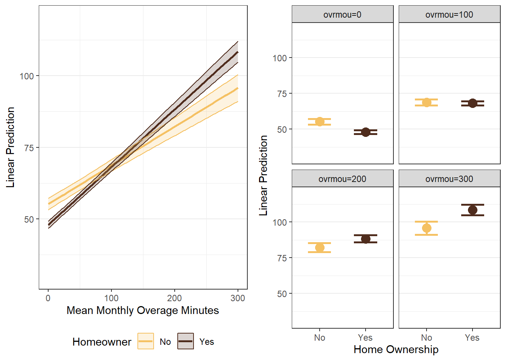
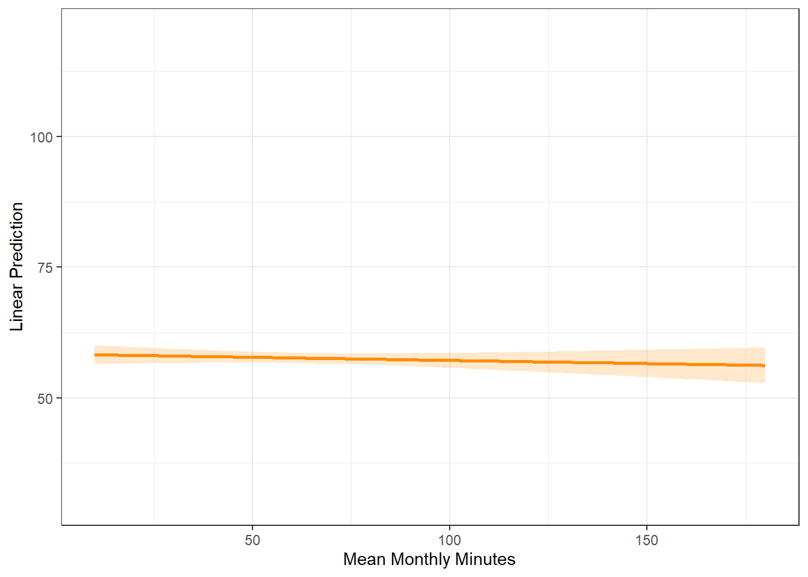
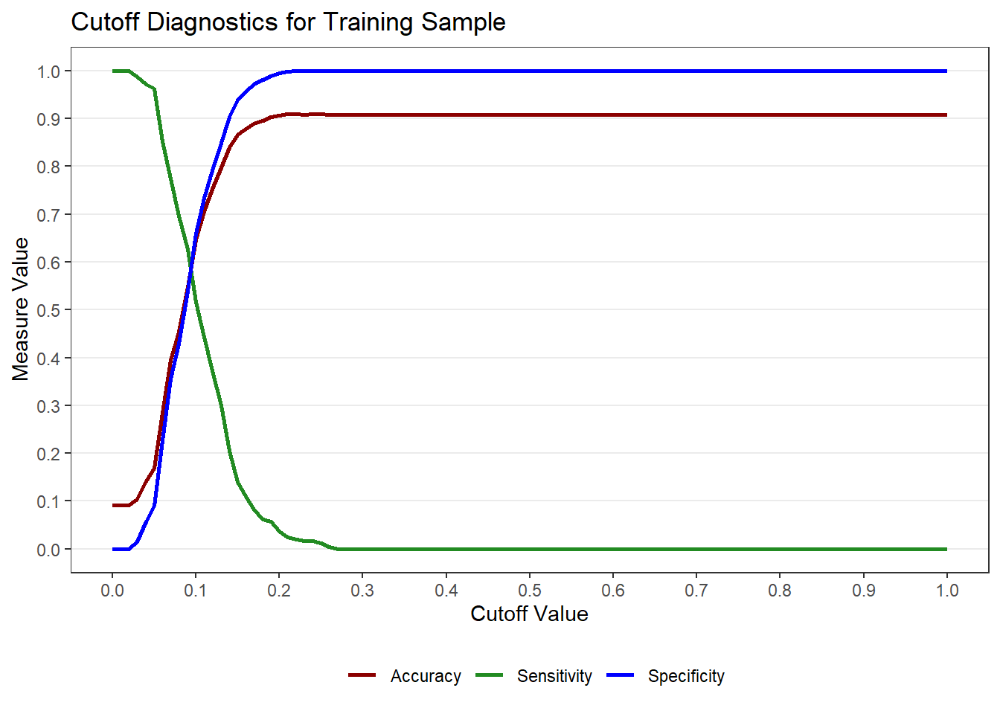
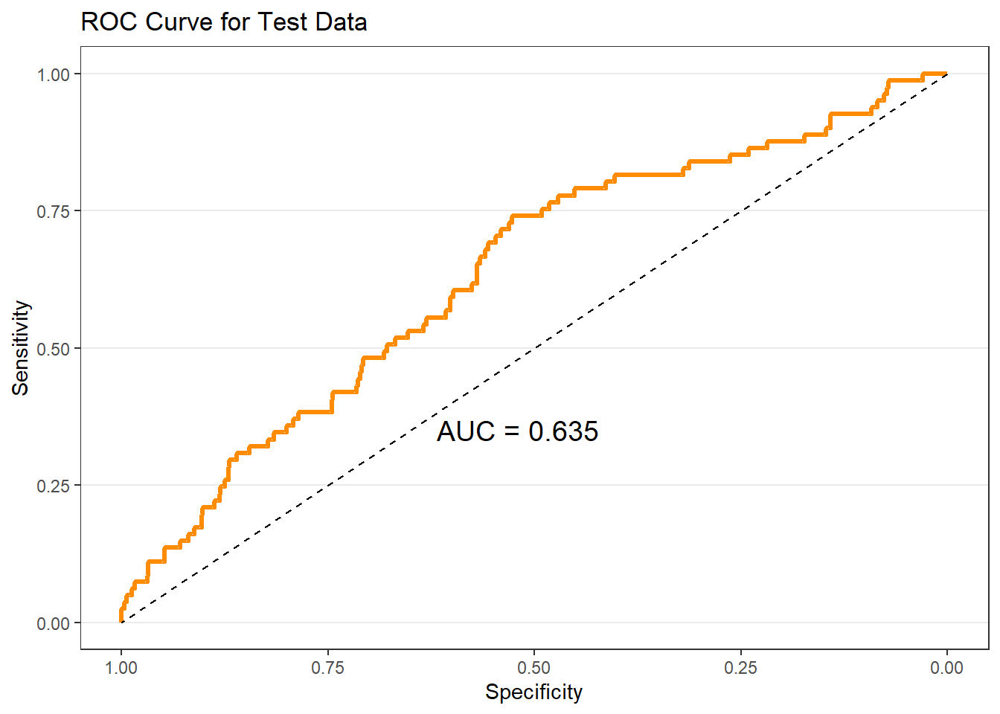
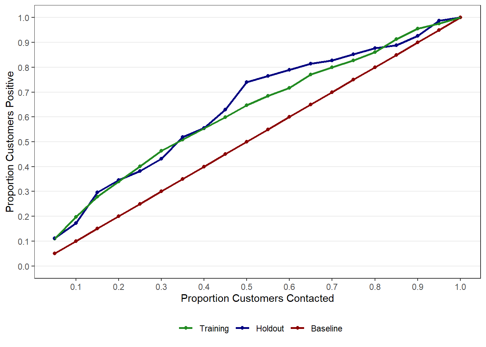

Topic 4 Targeting and Retaining Customers
4.1 R Packages and Datasets for Topic 4
Code
library(ggplot2) # Advanced graphing capabilities
library(tidyr) # Easier programming
library(GGally) # Scatterplot matrix
library(flextable) # Better HTML Tables
library(jtools) # Concise regression results
library(dplyr) # Easier programming
library(vtable) # Nice summary statistics tables
library(cowplot) # Arrange plots in grid
library(MKT4320BGSU)
data(bankmktg)
data(telecom)4.2 Targeting Customers
- One-to-One Marketing
- Time consuming
- Costly
- Mass Marketing
- Customer needs not being met
- Target Marketing
- Market to those likely to…
4.2.1 Goal
Target customers with the highest likelihood of a favorable outcome using explanatory variables
- Outcome variable could be:
- Purchase
- Sales
- Costs
- Profitability
- CLV
- Explanatory variables could be:
- Demographics
- Behaviors
- Usage
- Lifestyles
The outcome variable will dictate the type of analysis we can perform
- Continuous outcome variables have a meaningful magnitude
- Use linear regression
- Categorical outcome variables do not have a meaningful magnitude
- Use logistic regression
4.3 Retaining Customers
Importance of retention:
Reducing defections \(5\%\) boosts profits \(25\%\) to \(85\%\). — Frederick F. Reichheld and W. Earl Sasser, Jr.
4.4 Targeting Customers (Linear Regression) Example
4.4.1 Overview
- Customer revenue, usage, and demographics for a cell phone provider
- DV:
- Mean monthly revenue (prior 6 months),
avg6rev
- Mean monthly revenue (prior 6 months),
- IVs:
- Mean monthly minutes (prior 6 months),
avg6mou - Mean monthly customer care calls,
cc - Mean monthly directory assistance calls,
da - Mean monthly overage minutes,
ovrmou - Household income (dollars),
income - Own home (Yes; No),
own
- Mean monthly minutes (prior 6 months),
4.4.2 Summarize Data
- Useful to examine data prior to specifying the model
- Summary Statistics
Table 4.1: Summary Statistics
| Variable | N | Mean | Std. Dev. | Min | Pctl. 25 | Pctl. 75 | Max |
|---|---|---|---|---|---|---|---|
| avg6rev | 2382 | 57 | 45 | 2 | 33 | 68 | 726 |
| avg6mou | 2382 | 467 | 487 | 0 | 143 | 616 | 5321 |
| cc | 2382 | 1.5 | 3.8 | 0 | 0 | 1 | 63 |
| da | 2382 | 0.8 | 2.1 | 0 | 0 | 0.74 | 48 |
| ovrmou | 2382 | 41 | 105 | 0 | 0 | 36 | 2239 |
| income | 2382 | 64 | 36 | 10 | 38 | 83 | 180 |
| own | 2382 | ||||||
| … No | 709 | 30% | |||||
| … Yes | 1673 | 70% |
Figure 4.1: Scatterplot Matrix (with Correlations)
Code

4.4.3 Model Specification
- Goal: Determine what behaviors and demographics are associated with high revenue customers
- IVs are expected to be ones that are related to revenue
- Expect an interaction between home ownership and overage minutes
- Model: \[\begin{align} avg6rev=\alpha + &\beta_1avg6mou + \beta_2cc + \\ &\beta_3da+\beta_4income + \\ &\beta_5ovrmou+\beta_6own + \beta_7(ovrmou\times own) \end{align}\]
4.4.4 Model Interpretation
4.4.4.1 Results
Table 4.2: Linear Regression Results
Code
| F(7,2374) | 811.501 |
| R² | 0.705 |
| Adj. R² | 0.704 |
| Est. | S.E. | t val. | p | |
|---|---|---|---|---|
| (Intercept) | 33.742 | 1.436 | 23.494 | 0.000 |
| avg6mou | 0.049 | 0.001 | 35.598 | 0.000 |
| cc | -1.332 | 0.149 | -8.935 | 0.000 |
| da | 1.895 | 0.268 | 7.070 | 0.000 |
| income | -0.012 | 0.014 | -0.837 | 0.403 |
| ovrmou | 0.135 | 0.009 | 15.516 | 0.000 |
| ownYes | -7.235 | 1.207 | -5.996 | 0.000 |
| ovrmou:ownYes | 0.066 | 0.010 | 6.571 | 0.000 |
| Standard errors: OLS |
\[\begin{align} \hat{avg6rev} = 33.742 + &.049avg6mou-1.332cc + \\ &1.895da - .012income + \\ &.135ovrmou - 7.235own + 0.066(ovrmou\times own) \end{align}\]
4.4.4.2 Testing Overall Model Significance
- Relationship between DV and combined effects of IVs
- \(H_0: \text{all }\beta_k=0\) vs. \(H_a: \text{at least one }\beta_k\ne0\)
- Use F-statistic to test
- Conclusion: With a F-statistic of \(811.5\) and a \(p<.001\), we conclude that at least one \(\beta_k\) is significant
4.4.4.3 Assessing overall model fit
- How much variation in the DV is explained by the model
- Use \(R^2\) to assess
- Use Adjusted \(R^2\) to compare models
- Conclusion: Based on the \(R^2\), about \(70\%\) of the variance in
avg6revis explained by the model
4.4.4.4 Interpret Individual IVs
- Relationship between DV and each IV
- \(H_0: \beta_k=0\) vs. \(H_a: \beta_k\ne0\)
- Interpret significant relationships
avg6mou- With \(p<.001\),
avg6mouhas a significant effect onavg6rev. - A one unit increase in
avg6mouis predicted to increaseavg6revby \(.049\) units.
- With \(p<.001\),
cc- With \(p<.001\),
cchas a significant effect onavg6rev. - A one unit increase in
ccis predicted to decreaseavg6revby \(1.332\) units.
- With \(p<.001\),
da- With \(p<.001\),
dahas a significant effect onavg6rev. - A one unit increase in
dais predicted to increaseavg6revby \(1.895\) units.
- With \(p<.001\),
ovrmouandowninteraction- With \(p<.001\), the effect of
ovrmouonavg6revis significantly different based onown. - When the customer owns their home, a one unit increase in
ovrmouis predicted to increaseavg6revby \(.135+.066=.201\) units. - When the customer does notown their home, a one unit increase in
ovrmouis predicted to increaseavg6revby \(.135\) units.
- With \(p<.001\), the effect of
- Sometimes helps to visually examine the IVs for interpretation
- Plots can show predicted DV at different levels of IVs
Figure 4.2: Margin Plots for Significant IVs (No Interaction)
Code
# Use 'easy_mp' function from 'MKT4320BGSU' package
p1 <- easy_mp(target, focal="avg6mou", focal_range=c(0,1500))$plot +
# Add layers to returned ggplot for nicer looking output
ylim(30,120) + # Consistent y-axis limits
labs(x="Mean Monthly Minutes", y="Linear Prediction")
p2 <- easy_mp(target, focal="cc", focal_range=c(0,10))$plot +
# Add layers to returned ggplot for nicer looking output
ylim(30,120) + # Consistent y-axis limits
labs(x="Mean Monthly Customer Care Calls", y="Linear Prediction")
p3 <- easy_mp(target, focal="da", focal_range=c(0,10))$plot +
# Add layers to returned ggplot for nicer looking output
ylim(30,120) + # Consistent y-axis limits
labs(x="Mean Monthly Directory Assistance Calls", y="Linear Prediction")
# Use 'plot_grid' from 'cowplot' package to combine plots
# Need 'cowplot::' to force it to use plot_grid from 'cowplot' (vs. 'sjPlot')
cowplot::plot_grid(p1, p2, p3)
Figure 4.3: Margin Plots for Interaction
Code
# Use 'easy_mp' function from 'MKT4320BGSU' package
p4 <- easy_mp(target, focal="ovrmou", int="own", focal_range=c(0,300))$plot +
# Add layers to returned ggplot for nicer looking output
ylim(30,120) + # Consistent y-axis limits
labs(x="Mean Monthly Overage Minutes", y="Linear Prediction",
color="Homeowner", fill="Homeowner")
p5 <- easy_mp(target, focal="own", int="ovrmou", int_range=c(0,300))$plot +
# Add layers to returned ggplot for nicer looking output
ylim(30,120) + # Consistent y-axis limits
labs(x="Home Ownership", y="Linear Prediction")
# Use 'plot_grid' from 'cowplot' package to combine plots
cowplot::plot_grid(p4, p5, nrow=1)
Figure 4.4: Margin Plot for Insignificant IV
Code
 * Examine deciles of predicted values by the IVs * Split sample into 10 groups based on predicted DV * Look at mean values of IVs for each decile
Table 4.3: IVs by Predicted Deciles
Code
telecom %>%
cbind(., yhat=fitted(target)) %>% # Append fitted values to data
mutate(yhat.dec=11-ntile(yhat, 10), # Create deciles, but reverse order
own=as.numeric(own)-1) %>% # Covert own to 1=yes, 0=no
group_by(yhat.dec) %>% # Group by decile
summarise(across(avg6rev:own,
~mean(.x, na.rm=TRUE))) %>% # Calculate mean of each IV
flextable() # Nice tableyhat.dec | avg6rev | avg6mou | cc | da | ovrmou | income | own |
|---|---|---|---|---|---|---|---|
1 | 140.89496 | 1,445.20588 | 3.4929972 | 3.21853993 | 233.6628151 | 62.11214 | 0.5756303 |
2 | 79.25630 | 879.62185 | 2.5308123 | 1.59765756 | 72.0213585 | 68.32170 | 0.5672269 |
3 | 66.10504 | 658.82353 | 2.3319328 | 0.98722689 | 45.0808824 | 66.21007 | 0.5924370 |
4 | 54.00000 | 479.50420 | 1.1386554 | 0.63122899 | 24.7016807 | 66.72857 | 0.5588235 |
5 | 49.58403 | 376.96639 | 0.9621849 | 0.53243697 | 16.0875350 | 65.25383 | 0.6680672 |
6 | 45.59664 | 291.69748 | 0.9579832 | 0.38719538 | 10.0735294 | 63.87873 | 0.6428571 |
7 | 39.99160 | 224.22269 | 0.9705882 | 0.27557773 | 4.6803221 | 62.53975 | 0.6890756 |
8 | 36.80252 | 154.69748 | 0.7086835 | 0.20694328 | 2.4044118 | 58.18578 | 0.7478992 |
9 | 32.93724 | 110.35146 | 0.5662483 | 0.15429916 | 1.9731520 | 60.23379 | 0.9874477 |
10 | 28.66109 | 51.28033 | 1.2803347 | 0.04556485 | 0.7447699 | 61.95818 | 0.9916318 |
4.4.5 Conclusion
Recall our Goal:
Determine what behaviors and demographics are associated with high revenue customers
What did we learn?
- We can identify our highest revenue customers by examining
avg6mou,cc,da,ovrmouandown - Our highest revenue customers consumer over \(1000\) minutes per month and have over \(200\) overage minutes per month
- More directory assistance calls and fewer customer care calls are associated with higher revenue
4.5 Targeting Customers (Logistic Regression)
4.5.1 Overview
- Bank marketing data for customers of a bank
- DV:
- Open term deposit account,
response
- Open term deposit account,
- IVs:
- Age,
age - Average Yearly Balance,
balance - Housing Loan (Yes, No),
housing - Personal Loan (Yes, No),
loan - Married (Yes, No),
married
- Age,
- Predict current customers likely to buy
- Use training (75%) and holdout (25%) samples
4.5.2 Estimation Results
Table 4.4a: Logistic Regression Results on Training Sample (Logit Estimates)
Code
# Use 'splitsample' function to create training and test data
sp <- splitsample(bankmktg, "response", seed = 9999)
train <- sp$train
test <- sp$test
# Estimate using training sample
tgt.log <- glm(response ~ age + balance + housing + loan + married,
data=train, family="binomial")
# Use 'summ' from 'jtools' for nice looking output
summ(tgt.log, digits=3, model.info=FALSE)| χ²(5) | 42.874 |
| p | 0.000 |
| Pseudo-R² (Cragg-Uhler) | 0.035 |
| Pseudo-R² (McFadden) | 0.026 |
| AIC | 1598.467 |
| BIC | 1633.768 |
| Est. | S.E. | z val. | p | |
|---|---|---|---|---|
| (Intercept) | -2.345 | 0.292 | -8.041 | 0.000 |
| age | 0.017 | 0.007 | 2.545 | 0.011 |
| balance | -0.000 | 0.000 | -0.447 | 0.655 |
| housingYes | -0.467 | 0.139 | -3.360 | 0.001 |
| loanYes | -0.641 | 0.223 | -2.875 | 0.004 |
| marriedYes | -0.548 | 0.143 | -3.838 | 0.000 |
| Standard errors: MLE |
Table 4.4b: Logistic Regression Results on Training Sample (Odds Ratio Estimates)
Code
| exp(Est.) | S.E. | z val. | p | |
|---|---|---|---|---|
| (Intercept) | 0.096 | 0.292 | -8.041 | 0.000 |
| age | 1.017 | 0.007 | 2.545 | 0.011 |
| balance | 1.000 | 0.000 | -0.447 | 0.655 |
| housingYes | 0.627 | 0.139 | -3.360 | 0.001 |
| loanYes | 0.527 | 0.223 | -2.875 | 0.004 |
| marriedYes | 0.578 | 0.143 | -3.838 | 0.000 |
| Standard errors: MLE |
4.5.3 Overall Model Fit
- Based on the likelihood ratio test with p-value < .0001, the overall model is significant
- McFadden’s Pseudo-\(R^2\) of .026 means that the model explains only about 3% of variation between buyers/non-buyers
- Classification Matrix for Training Sample
- What’s the problem?
Table 4.5: Classification Matrix for Training Sample
Code
# NOTE: Saving as result for formatting of online lecture notes
cmout <- classify_logistic(MOD=tgt.log, # Object with model results
DATA=train, # Model data frame
POSITIVE="Yes", # Factor level for "True"
DATA2=test, # Test/holdout data frame
LABEL1="Training Data",
LABEL2="Test Data",
ft=TRUE)
cmout$sample1$tableClassification Matrix - Training Data (Cutoff = 0.50) | |||
|---|---|---|---|
Accuracy = 0.908 | |||
PCC = 0.833 | |||
Reference | |||
Predicted | No | Yes | Total |
No | 2409 | 244 | 2653 |
Yes | 0 | 0 | 0 |
Total | 2409 | 244 | 2653 |
Selected Statistics (Positive Class): | |||
Sensitivity | 0.000 | ||
Specificity | 1.000 | ||
Precision | |||
- Sensitivity/Specificity Plot
Figure 4.5: Sensitivity/Specificity Plot for Training Sample
Code

- Classification Matrix for Training Sample (0.1 Cutoff)
Table 4.5: Classification Matrix for Training Sample
Code
# NOTE: Saving as result for formatting of online lecture notes
cmout <- classify_logistic(MOD=tgt.log, # Object with model results
DATA=train, # Model data frame
POSITIVE="Yes", # Factor level for "True"
CUTOFF=0.1, # Use 0.1 for cutoff
DATA2=test, # Test/holdout data frame
LABEL1="Training Data",
LABEL2="Test Data",
ft=TRUE)
cmout$sample1$tableClassification Matrix - Training Data (Cutoff = 0.10) | |||
|---|---|---|---|
Accuracy = 0.646 | |||
PCC = 0.833 | |||
Reference | |||
Predicted | No | Yes | Total |
No | 1589 | 118 | 1707 |
Yes | 820 | 126 | 946 |
Total | 2409 | 244 | 2653 |
Selected Statistics (Positive Class): | |||
Sensitivity | 0.516 | ||
Specificity | 0.660 | ||
Precision | 0.133 | ||
- Classification Matrix for Holdout Sample (0.1 Cutoff)
- Results very similar for holdout sample
Table 4.6: Classification Matrix for Holdout Sample with 0.1 Cutoff
Classification Matrix - Test Data (Cutoff = 0.10) | |||
|---|---|---|---|
Accuracy = 0.646 | |||
PCC = 0.833 | |||
Reference | |||
Predicted | No | Yes | Total |
No | 528 | 39 | 567 |
Yes | 274 | 42 | 316 |
Total | 802 | 81 | 883 |
Selected Statistics (Positive Class): | |||
Sensitivity | 0.519 | ||
Specificity | 0.658 | ||
Precision | 0.133 | ||
- ROC Curve for Holdout Sample
- Area between \(.5\) and \(.7\) suggests poor model fit
Figure 4.6: ROC Curve for Holdout Sample
Code

4.5.4 Interpreting Coefficients
ageis positive (\(OR>1\)) and significant (\(p=.011\))- \(1\) year increase in age increases odds of buying by a factor of \(1.017\) (or odds of buying increase by \(1.7\%\))
marriedis negative (\(OR<1\)) and significant (\(p<.001\))- Being married decreases odds of buying by factor of \(.578\) (or odds of buying decrease by \(42.8\%\))
housingis negative (\(OR<1\)) and significant (\(p=.001\))- Having a home loan decreases odds of buying by factor of \(.627\) (or odds of buying decrease by \(37.3\%\))
loanis negative (\(OR<1\)) and significant (\(p=.004\))- Having a personal loan decreases odds of buying by factor of \(.527\) (or odds of buying decrease by \(47.3\%\))
4.5.5 Interpreting Coefficients Visually
Figure 4.7: Margin Plots for Significant IVs
Code
# Use 'easy_mp' to create margin plots (with added layers for formatting)
lr1 <- easy_mp(tgt.log, focal="age")$plot +
ylim(0,.3) +
labs(x="Age", y="Pr(Response)")
lr2 <- easy_mp(tgt.log, focal="married")$plot +
ylim(0,.3) +
labs(x="Married", y="Pr(Response)")
lr3 <- easy_mp(tgt.log, focal="loan")$plot +
ylim(0,.3) +
labs(x="Personal Loan", y="Pr(Response)")
lr4 <- easy_mp(tgt.log, focal="housing")$plot +
ylim(0,.3) +
labs(x="Housing Loan", y="Pr(Response)")
# Use 'plot_grid' to combine
cowplot::plot_grid(lr1, lr2, lr3, lr4, nrow=2)
4.5.6 Gain Chart
- Contacting top \(20\%\) of predicted buyers yields about \(34\%\) of actual buyers
- Contacting top \(30\%\) of predicted buyers yields about \(45\%\) of actual buyers
Figure 4.8: Gain Chart
Code

4.6 Suggested Readings
- Marketing Data Science (2015). Miller, Thomas W.
- BGSU Library Link:
https://librarysearch.bgsu.edu/permalink/01OHIOLINK_BGSU/i5ro6c/alma9926167769408506 - Chapter 3: Targeting Current Customers
- BGSU Library Link: